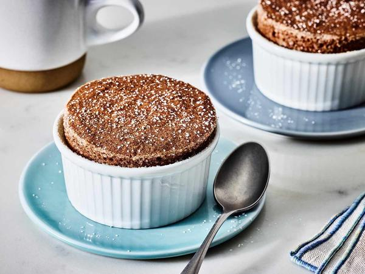

I nearly said no.
A student walked into my office—a Wednesday afternoon in October, the kind of grey Charleston day that makes you want to stay in bed—and handed me a piece of paper. On it was written: Chocolate soufflé, 6 servings. Scale to 50 servings.
"You can't scale a soufflé," I said. I didn't mean to sound harsh. But I was tired. I had graded 27 scaling worksheets the night before, and three of them had multiplied baking soda by the full scaling factor. I was in a mood.
Jasmine—that was her name—didn't flinch. "You said we should pick something that scares us."
"What's the difference?"
I looked at her. She was 19, maybe 20. Wire‑rim glasses. A notebook covered in doodles of cakes and cookies. She had failed the first quiz of the semester—scaling factors, basic stuff—but she had come to every office hour since then. She was trying.
"Soufflés are fragile," I said. "The egg whites. The rise. The timing. When you scale a soufflé, you're not just multiplying ingredients. You're multiplying points of failure."
"One batch of 50 soufflés means 50 egg whites whipped to the exact right stiffness. 50 ramekins buttered and sugared. 50 opportunities for something to go wrong."
"I know," she said again. "That's why I picked it."
I sighed. "Show me your math."
The Plan That Made Me Nervous She opened her notebook. The pages were messy—crossed‑out numbers, arrows connecting one calculation to another, doodles in the margins. But the math was solid.
Original recipe (6 servings):
60g (2.1oz) butter (for the base)
60g (2.1oz) all‑purpose flour
240g (8.5oz) whole milk
120g (4.2oz) dark chocolate (70% cacao)
6 large eggs, separated
100g (3.5oz) granulated sugar
Butter and sugar for the ramekins (additional)
Desired yield: 50 servings Scaling factor: 50 ÷ 6 = 8.33
Jasmine's scaled ingredients:
Butter (base): 60g × 8.33 = 500g (17.6oz)
Flour: 60g × 8.33 = 500g (17.6oz)
Milk: 240g × 8.33 = 2,000g (70.5oz) — about 8.5 cups
Chocolate: 120g × 8.33 = 1,000g (35.3oz) — about 10 standard bars
Eggs: 6 × 8.33 = 50 eggs (she rounded up from 49.98)
Sugar: 100g × 8.33 = 833g (29.4oz) — about 4 cups
So far, so normal. But here's where she surprised me.
She didn't plan to make one batch of 50. She planned to make eight batches of 6 servings, plus one batch of 2 servings.
Batch Servings Scaling Factor Eggs Needed 9 2 0.33x 2 Total eggs: (8 × 6) + 2 = 50 eggs.
"Why not one big batch?" I asked.
"Because my home oven only fits two soufflé dishes at a time," she said. "A 6‑serving recipe uses one 8‑inch soufflé dish. I have two dishes. So each batch takes about 15 minutes to bake. Eight batches = about two hours."
She had calculated the timing. She had counted her equipment. She had even thought about holding time—soufflés deflate quickly, so she would need to serve each batch immediately.
I sat back in my chair. "You've thought about this."
"Two weeks?"
I looked at her notebook again. The margins were full of questions she had asked herself. Does the chocolate need to be a specific brand? Can I prep the ramekins the night before? What if the egg whites deflate while I'm waiting for the oven?
She had answered every question. In detail.
"Jasmine," I said. "This is the best scaling proposal I've ever received."
She smiled. "I told you I could do math."
The Day of the Soufflé The final assignment was due on a Thursday. Jasmine showed up at 8 a.m.—two hours before class—with a rolling cooler full of ingredients and a look on her face that I can only describe as terrified determination.
I had reserved the community college kitchen for her. It's a teaching kitchen—six stations, each with its own oven and stove. She had access to everything.
I sat at a counter near the back and watched.
8:15 a.m. – Batch 1
She buttered two 8‑inch soufflé dishes. Melted the butter (60g) in a saucepan. Added the flour (60g), whisked into a roux. Poured in the milk (240g), whisked until thick. Removed from heat. Added the chocolate (120g), stirred until melted.
Then the eggs. She separated six eggs over a small bowl—carefully, because a broken yolk would ruin the whites. The yolks went into the chocolate mixture one at a time. The whites went into the stand mixer bowl.
She whipped the egg whites on medium speed until they were foamy, then added the sugar (100g) slowly. The whites turned glossy. Soft peaks. She folded them into the chocolate mixture in three additions.
The batter looked perfect. Light. Airy. Dark brown with a faint sheen.
She poured it into the two prepared dishes. Into the oven at 375°F. Set a timer for 15 minutes.
While batch 1 baked, she started batch 2.
8:45 a.m. – Batch 1 comes out
The soufflés had risen about two inches above the rim of the dishes. Golden brown on top. Slightly cracked (that's normal—soufflés always crack). She pulled them out, dusted them with powdered sugar, and carried them to the classroom next door.
"You have to eat them now," she told the students who had arrived early. "They deflate in about five minutes."
They ate them. They made happy noises. I ate mine. It was perfect—light, chocolatey, with a crisp exterior and a molten center.
9:00 a.m. to 11:00 a.m. – Batches 2 through 8
The rhythm was hypnotic. Mix, whip, fold, pour, bake. While one batch baked, she prepped the next. Every 15 minutes, a new batch of soufflés emerged from the oven. Every 15 minutes, a new group of students ate warm chocolate soufflé.
By 10:30 a.m., the classroom smelled like a French patisserie. Students who didn't even have class that day showed up because they heard there was free soufflé.
11:15 a.m. – The partial batch (2 servings)
The final batch was the hardest. She had to scale every ingredient to 0.33x. That meant:
Butter: 20g (0.7oz)
Flour: 20g (0.7oz)
Milk: 80g (2.8oz)
Chocolate: 40g (1.4oz)
Eggs: 2 (separated)
Sugar: 33g (1.2oz)
She measured everything on her scale—the same scale I use at home, a $25 digital model from Amazon. She worked slowly, carefully, checking each measurement twice.
At 11:30 a.m., the final two soufflés came out of the oven. She dusted them with powdered sugar. Then she walked over to my counter and handed me one.
"This one's for you," she said.
I took a bite. Light. Airy. Perfect.
"Jasmine," I said. "You did it."
"I did it," she said. And then she started crying.
The Tears (and Why They Mattered) She wasn't sad. She was relieved. She told me later that she had been terrified for two weeks—that she lay awake the night before, convinced that all 50 soufflés would collapse, that she would fail the assignment, that she would prove she couldn't do math.
"But you did do math," I said. "You did more math than anyone else in the class."
That's the thing about scaling. The math is simple. The confidence is hard.
Jasmine had failed algebra twice in high school. Her teachers had told her she wasn't a math person. She believed them for years.
Then she walked into my classroom, and I told her that scaling a recipe is just solving for X. That baker's percentage is just ratios. That anyone can learn it if they have a reason to care.
Her reason was soufflé. She loved soufflé. She wanted to make soufflé for her family on Christmas morning. Her family has 12 people, not 6, so she needed to scale it.
That's the whole story. That's why she worked so hard. Not for a grade. Not to prove anything to me. Because she wanted to feed people she loved.
What I Learned from Jasmine I've taught culinary math for five years. I've had over 200 students. But Jasmine taught me something I didn't expect.
Fear of math isn't about math. It's about fear.
Jasmine knew how to multiply. She knew how to divide. She knew how to calculate a scaling factor. The math wasn't the barrier.
The barrier was the voice in her head that said you can't do this. The voice that said you failed algebra twice, so you're stupid. The voice that said soufflé is too hard for someone like you.
She needed to prove that voice wrong. That's why she picked soufflé. That's why she spent two weeks planning. That's why she showed up at 8 a.m. with a rolling cooler full of ingredients.
She wasn't scaling a recipe. She was scaling her own belief in herself.
And it worked.
The Aftermath (What She's Doing Now) Jasmine graduated last year. She's working at a bakery in Greenville—a small place that specializes in sourdough and pastries. She texts me photos sometimes.
Last month, she sent me a picture of a chocolate soufflé. The caption said: "Scaled to 200 servings for a catering event. 33 batches of 6. Took 6 hours. Worth it."
I zoomed in on the photo. Two hundred individual soufflés, lined up on a table, perfectly puffed, dusted with powdered sugar.
I called her.
"Jasmine," I said. "How did you do 200 servings?"
"Same math as 50," she said. "Scaling factor 33.33. 33 batches of 6 servings, plus a partial batch of 2. I used the college kitchen. Baked for 8 hours."
"I brought a camping chair. And a lot of coffee."
I laughed. "You're insane."
"You taught me that," she said. "Insanity is just stubbornness with a deadline."
The Tool That Makes Soufflé Scaling Possible After Jasmine's project, I added a feature to the Recipe Scaling Calculator specifically for fragile recipes. It flags scaling factors above 10x and suggests batch sizes.
That's what Jasmine needed. Not someone to do the math for her. Someone to tell her the math was possible.
The Soufflé Rules (If You Want to Try This at Home) If you're insane enough to scale a soufflé—and I mean that as a compliment—here are Jasmine's rules:
Rule 1: Batch, don't bulk. Never make one giant batch of soufflé batter. The egg whites will deflate while you're portioning. Make multiple batches of the original size.
Rule 2: Know your oven capacity. How many soufflé dishes fit at once? That's your batch size. Jasmine's oven fit 2 dishes. Yours might fit 4 or 6. Calculate your total batches before you buy ingredients.
Rule 3: Stagger your timing. While one batch bakes, prep the next. The rhythm is everything. If you stop moving, you lose momentum.
Rule 4: Serve immediately. Soufflés deflate. It's their whole personality. Have your guests seated and ready before you pull the dishes from the oven.
Rule 5: Accept collapse. Some soufflés will fall. It's fine. Eat them anyway. They still taste good.
Rule 6: Document everything. Jasmine filled an entire notebook with her scaling process. Every batch. Every timing adjustment. Every mistake. That notebook is now her catering bible.
The Call I Got Last Week Jasmine called me last week. Not about soufflé. About something else.
"I'm teaching a baking class at the community center," she said. "Basic stuff. Cookies, brownies, quick breads."
"That's wonderful," I said.
I smiled. "What did you tell her?"
"What did she say?"
"And what did you say?"
I didn't cry. But I wanted to.
The Quick Reference for Soufflé Scalers Original Servings Desired Servings Scaling Factor Batch Strategy 6 12 2x 2 batches of 6 6 24 4x 4 batches of 6 6 30 5x 5 batches of 6 6 50 8.33x 8 batches of 6 + 1 batch of 2 6 100 16.67x 16 batches of 6 + 1 batch of 4 (or 17 batches of 6 with leftovers) The formula that Jasmine used: Number of batches = ceil(Desired servings ÷ Original servings)
But with a twist: never make a batch larger than your original. Keep each batch at the original size (6 servings) or smaller.
That's the secret. Not bigger batches. More batches.
Jasmine is 22 now. She runs the pastry section at a bakery that serves 300 people a day. She scales recipes in her sleep. She teaches baking classes on weekends.
Last Christmas, she made soufflé for her family of 12. She scaled the recipe herself—no calculator, no notebook, just the math in her head.
Her mother cried. Not because of the soufflé. Because her daughter, who failed algebra twice, stood in the kitchen and multiplied fractions without hesitation.
That's why I teach.
— Olivia Hartmann
P.S. Jasmine still has that notebook. The one with the doodles and the crossed‑out numbers and the questions in the margins. She showed it to me last month. On the inside cover, she had written: "Scaling factor for my life: 100x. Thanks, Olivia." I'm not crying. You're crying.